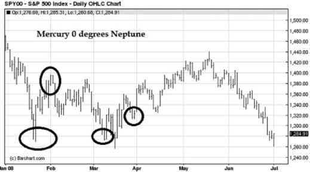

There are eight planets that form the framework for the application of astrology to trading and investing on the financial markets. These planets are Mercury, Venus, Mars, Jupiter, Saturn, Uranus, Neptune and Pluto. In recent years there has been much debate as to whether or not Pluto qualifies as a true planet or simply one of several dwarf planets. For the purposes of this book, consider Pluto to be a true planet.
This chapter looks at how planetary aspects, first trade dates and synodic periods all can be incorporated into a trading strategy.
Planets and Aspects
The diagram in Figure 3-1 courtesy of www.zoomschool.com shows the positional arrangement of the planets in relation to the Sun. Note also the sizes of the other planets in comparison to Earth.
Figure 3-1 The Planets
From a vantage point located on Earth, as these planets orbit 360 degrees around the Sun, they can be seen to make angles (called aspects) to the Sun and to each other. The aspects commonly used to study the financial markets are 0, 30, 45, 60, 90, 120 and 180 degrees (respectively called conjunct, semi-sextile, semi-square, sextile, square, trine and opposition events). The application of astrology to market trading allows for some ‘room’ (or orb) when considering the various aspects.
• A conjunct event (0 degree separation) is deemed to be occurring when two planets are within 10 degrees of being 0 degrees apart from each other.
• The same applies to an opposition event (180 degree separation).
• A square event (90 degree separation) is deemed to be occurring when two planets are within 5 degrees of being 90 degrees to one another.
• A semi-sextile event (30 degree separation) event is deemed to be occurring when two planets are within 3 degrees of being 30 degrees from one another.
• A semi-square event (45 degree separation) is deemed to be occurring when two planets are with 3 degrees of being 45 degrees apart from one another.
• A sextile event (60 degree separation) is deemed to be occurring when two planets are with 5 degrees of being 60 degrees apart from one another.
• A trine event (120 degree separation) is deemed to be occurring when two planets are with 5 degrees of being 120 degrees apart from one another.
Strange Symbols and the Ephemeris
Figure 3-2 presents a summary of the symbols used in astrology to denote the various planets and the various aspects. As you repeatedly apply the information in this book to your market activity, you will become quite fluent with these strange looking symbols, called glyphs.
Figure 3-3 presents an excerpt taken from a heliocentric Ephemeris for the month of December 1980. Notice how the symbols denoting the various planets appear along the top of the data table. Along the left axis, the days of the month appear. In each column notice the number expressed in degrees along with a glyph. Thus, for any given day in the month of December 1980, one can find the position of the Moon and the various planets in terms of degrees and astrological sign. For example, on December 1, 1980 we can see that: Jupiter was 26 degrees, 45 minutes into the sign of Virgo. On December 20, Venus was 25 degrees and 17 minutes into the sign of Libra. With a little practice, you will quite soon find yourself comfortably interpreting the data in an ephemeris. In my experience, a good heliocentric ephemeris is not something readily available in book stores. I do have one for calendar years 2000 and onwards. However, I find it just as easy to obtain my heliocentric data from the website www.astro.com/swisseph/swepha_e.htm.
Figure 3-2 Astrology Symbols
Figure 3-3 Ephemeris page December 1980
Case Study #1—Apple (Nasdaq:AAPL)
The best way to see astrology in action is to look at a case study for a particular stock. In Figure 3-3, look at the date of December 12, 1980. On that date, the data shows that Mercury was at 15 degrees of Scorpio, Venus was at 12 degrees of Libra, Mars at 2 degrees of Aquarius, Jupiter at 27 degrees of Virgo, Saturn at 2 degrees of Libra, Uranus at 26 degrees of Scorpio, Neptune at 22 degrees of Sagittarius and Pluto was at 22 degrees of Libra.
The date of December 12, 1980 happens to be the day when shares in Apple (Nasdaq:AAPL) first started trading on a recognized stock exchange. This date is Apple’s first trade date.
When applying astrology to an individual stock, the first step is to compose a visual diagram of the positions of the Planets on the first trade date. To construct such a diagram, one could start with a blank version of a diagram similar to that of Figure 1-1 shown back in Chapter 1. But, thankfully technological advances have touched upon the world of astrology. Software programs are now available to prepare first trade charts for you. I personally have two programs that I use. The first is produced by AIR Software and is called Millenium Trax, the second is produced by Astrolabe and is called Solar Fire Gold. Both are very affordable. I am sure there are many more such programs available for purchase and indeed one may even find apps for smart phones and tablets that will help you with astrology charts.
When running one of these programs, the entry data required consists of the first trade date, the location and a time. If the stock happens to be a US traded equity, the location will be New York. Canadian equities will have a location of Toronto and U.K. equities would have a location of London and so on. The time element will be the time the stock started trading on the first trade date. I always assume the time element to be the hour at which the stock exchange starts its trading. Sometimes there can be delays in getting a new stock up and trading for the first time, but this tends to be the exception. For US and Canada, trade start times are taken to be 9:30 am. With date, time and location data entered into the program, the result will be a chart showing the placements of the planets on that date. Although termed a first trade chart, such a chart is technically called a horoscope derived from the Greek horoskopis meaning ‘a look at the hours’. The following figure shows the chart generated for Apple (Nasdaq:AAPL) using the Millenium Trax software. Note that when entering data parameters for a first trade chart, you must specify whether you are wanting the heliocentric calculations or the geocentric calculations. In the case of Apple (Nasdaq:AAPL), I have selected heliocentric.
Figure 3-4 Apple (Nasdaq:AAPL) heliocentric first trade chart
After generating a first trade chart, the second step is to study it carefully and note the planetary pairs that form aspects.
In the Apple (Nasdaq:AAPL) heliocentric chart one can see that:
• Sun is 180 degrees from Neptune which is an opposition event.
• Sun and Pluto are 122 degrees apart which is a trine event.
• Mars and Saturn are 121 degrees apart for a trine event.
• Mercury and Saturn are 45 degrees apart for a semi-square event.
• Neptune and Pluto are 60 degrees apart for a sextile event.
• Jupiter and Sun are 97 degrees apart which is just a bit too much for a square event.
• Mercury and Pluto are 25 degrees apart which is not quite a semi-sextile event.
• Jupiter and Mars are 126 degrees part which is too much for a trine event.
• Sun and Venus are 113 degrees apart which is not enough for a trine event.
The third step is to determine which of the aspects is the most powerful to incorporate into a trading or investing strategy. To make this determination, focus on the aspects made between the faster moving inner planets (Mercury, Venus, Mars) with the Sun and aspects between these faster moving planets and the outer, slower moving planets. Focus also on any aspects between the slower outer planets and the Sun.
Fourth, use either an ephemeris table or a software program to generate a list of such aspects dating back several years.
Fifth, generate a stock chart of the stock in question going back several years. Mark the aspect dates on the price chart and see which aspects most often align with a swing high or swing low trend changes in price. Once it has been determined which aspects align most often with price swings, these aspects can then be used to look forward in time and anticipate when they will repeat themselves and deliver a swing change in price trend.
Continuing with the study of Apple (Nasdaq:AAPL), the aspects involving Sun-Neptune, Sun-Pluto, Mars-Saturn, Mercury-Saturn and Neptune-Pluto all appear to be excellent candidates to focus on. However, given that Neptune and Pluto are both slower moving outer planets, we can discard them from the list. Figure 3-5 presents a daily chart of Apple (Nasdaq:AAPL) from October 2011 to October 2012. Notice how a Mercury-Saturn 45 degree aspect occurs in very close proximity to swing highs made in October, April and at the $705 peak in September. Traders engaged in AAPL stock and watching chart technical analysis would have had an extra measure of fore-warning at these swing highs. The daily chart in Figure 3-6 covers the same time frame and shows additional aspects that traders would have been alert to. And so it goes. This is how astrological aspects as determined from a first trade chart can be used as a very powerful compliment to the technical analysis techniques already being as part of your trading.
Figure 3-5 Aspects affecting (Nasdaq:AAPL) share price
Figure 3-6 More aspects affecting (Nasdaq:AAPL) share price
Case Study #2—Ford Motor Company (NYSE:F)
As another case study, consider the Ford Motor Company. Figure 3-7 illustrates the first trade chart for Ford generated using the Millenium Trax software. In this case study, I am using geocentric astrology to show you how it differs slightly from its heliocentric counterpart.

Figure 3-7 Ford Motor Company (NYSE:F)
geocentric first trade chart
There are four aspects that immediately stand out on this chart. Venus is 180 degrees opposite to Neptune, Mercury is opposite Pluto, Mercury is opposite Saturn and Venus is 90 degrees square to Uranus.
Figure 3-8 Aspects affecting (NYSE:F)
Figure 3-8 illustrates a daily price chart of Ford Motor Company dating back 12 months. Note in mid-June 2012, share price action experienced a reversal at the Mercury-Pluto opposition, after failing to get above the late-May highs. In early October, price action registered a swing bottom thus giving traders who missed the late August bottom another chance to take long positions.
Figure 3-9 More aspects affecting (NYSE:F)
Figure 3-9 illustrates the Mercury-Saturn and Venus-Uranus aspects. The Mercury-Saturn aspect in May aligns with what appears to be a short-covering rally. The swing high in August would have been a good point for short term traders to take profits assuming long positions had been initiated in early August as a New Moon appeared.
The aspects illustrated in the preceding two figures do not capture all the swings in price. But when used in conjunction with technical chart analysis, these aspects will provide you with a unique perspective on the price action of Ford Motor Company shares.
Five Steps for Applying Astrology to Individual Stocks
1. Compile a first trade date astrology chart for the stock in question.
2. Note the planetary pairs that form aspects.
3. Determine which of these aspects have the most powerful impact on price.
4. Generate a list of these aspects going back several years.
5. Overlay these aspects on a stock chart going back several years to verify their effectiveness. Then, watch for these aspects to re-occur in the future.
Ruler-Ship, Exaltation, Fall and Detriment
Astrology also rests firmly on the notions of ruler-ship, exaltation, detriment and fall. Each sign of the zodiac is deemed to be ‘ruled’ by a planet or planetary pair. That is, the particular zodiac sign will exhibit characteristics similar to its ruling planet or planetary pair. For a given zodiac sign (or point within a sign), certain planets function very well and exhibit powerful influence. This powerful influence is called exaltation. There are also signs in which a given planet may exhibit unpredictable behavior thus keeping traders and investors on edge. This is behaviour is called detriment. Lastly, there are signs where planets exhibit very weak amounts of influence. This weak influence is called fall.
Table 3-1 shows the ruler-ship of the various signs along with positions of exaltation, fall and detriment. Notice that when a planet is in exaltation in a sign, it will be in fall when it reaches the opposing sign of the zodiac. A planet will be in fall when it appears in a sign opposite to that sign which it rules. For example, if Jupiter figures prominently in the price moves of a stock, it would be wise to pay close attention to price action of that stock as Jupiter experiences exaltation in the sign of Cancer. Table 3-1 suggests that the point of 5 degrees Cancer should be focused on. Some older literature studied when researching this book was adamant that exaltation and fall only occurred at certain degrees of a sign, while other publications took a slightly more relaxed stance and considered exaltation and fall to occur during the entire transit of the sign. If Venus figures prominently in the price moves of a stock, take note that Venus is in detriment as it passes through the signs of Aries and Scorpio, so any favourable price action you may be expecting may be somewhat dampened. Thus, when incorporating the notions of exaltation, detriment and fall into your trading strategy, be sure to do adequate back-testing to see how price action has responded in past across the entire transit of a sign as well as at the specific points listed in Table 3-1. Back testing can be done with the help of ephemeris tables or with a software program.
|
Sign |
Ruler |
Exaltation |
Fall |
Detriment |
|
Aries |
Mars/Pluto |
Sun 19 degrees |
Saturn 21 degrees |
Venus |
|
Taurus |
Venus |
Moon 3 degrees |
Uranus |
Mars |
|
Gemini |
Mercury |
Mercury |
Jupiter |
|
|
Cancer |
Moon |
Jupiter 5 degrees |
Mars 28 degrees |
Saturn |
|
Leo |
Sun |
Neptune |
Pluto |
Uranus |
|
Virgo |
Mercury |
Mercury 15 degrees |
Venus 27 degrees |
Neptune |
|
Libra |
Venus |
Saturn 21 degrees |
Sun 19 degrees |
Mars/Pluto |
|
Scorpio |
Mars |
Uranus |
Moon 3 degrees |
Venus |
|
Sagittarius |
Jupiter |
South Node 3 degrees |
Mercury |
Mercury |
|
Capricorn |
Saturn |
Mars 28 degrees |
Jupiter 5 degrees |
Moon |
|
Aquarius |
Uranus/Saturn |
Pluto |
Neptune |
Sun |
|
Pisces |
Neptune/Jupiter |
Venus 27 degrees |
Mercury 15 degrees |
Mercury |
Table 3-1 Exaltation, Detriment and Fall Positions
Looking once again at our example of Apple (Nasdaq:AAPL), we can clearly see the influences of exaltation. Using the ephemeris tables, I determined the calendar dates for several of the above exaltation dates that fell into the timeframe August 2011 to August 2012. Figure 3-10 plots these dates.
Figure 3-10 Exaltation dates
Notice how the Sun at 19 degrees of Aries position aligns with a major swing high in April 2012. See the rally that got underway early in October 2011. This rally stumbled for a while as Saturn entered its exalted time at 21 degrees of Libra. Saturn has a reputation for spoiling the party and in this case it lived up to its reputation. Lastly, Venus entered its point of exaltation in February 2012. Price was already rallying at that time, but look closely and you will see that as Venus hit its point of exaltation, price action surged quickly. Although not shown on this chart, Mercury hit 15 degrees Virgo and exaltation on September 9, 2012. Price action of AAPL the very next day fell some $18 per share in true ‘mercurial’ fashion!
On September 21, 2012 when AAPL hit its high of $705, it is curious to observe that Saturn was at 28 degrees of Libra, just past its maximum point of exaltation. Saturn typically can have a detrimental effect on share price action and in this case, it seems that once the all-time was reached, Saturn exerted its powerful suppressing nature to drive price action downwards. As well, at the time of this price high, Mars was in the sign of Scorpio where it rules. Mars having war-like tendency, seems to have declared war on share price as AAPL went on to lose nearly $200 per share in value by the end of 2012. Lastly, at the time of the $705 high, Jupiter was at 16 degrees Gemini. Jupiter typically is associated with expansive behaviours and by being in Gemini, it was in fall, thus its expansionary tendencies were muted, giving added impetus to a fall in share price.
Although using planetary phenomena in market trading requires considerable preparation work, once you have done the preparation work for your favorite stocks or commodity futures, you stand to enjoy a distinct advantage in your trading. This advantage can then be further sharpened by using synodic periods, sign changes, retrograde motion and Mid-Heaven and Ascendant techniques which we now will examine in greater detail.
Watch for significant price movements at those times when planets are in exaltation, detriment or fall.
Mid-Heaven and Ascendant Strategies
In Chapter One, the concepts of Mid-Heaven (MC) and Ascendant (Asc) were introduced. To use the notion of Mid-Heaven in a trading strategy, it is also necessary to generate a geocentric first trade chart. The chart in Figure 3-11 is that of Coca Cola (NYSE:KO) which has a first trade date of September 26, 1924.
On this or any geocentric first trade chart, the Mid-Heaven is at the top of the chart. In the case of Coca Cola, the Mid-Heaven (MC) is at 29 degrees of the Sign of Leo.
Each calendar year, traders should make careful note of when the faster moving planets Mercury and Venus pass across the Mid-Heaven position found in a stock’s first trade chart. Slightly slower moving Mars can also be important too. Within one or two degrees on either side of the MC position watch stock price action for possible swing reversals in trend. Sometime such swings can be short in duration, sometimes larger.
Figure 3-11 Coca Cola (NYSE:KO) first trade chart
The Ascendant (denoted Asc) on a geocentric first trade chart such as the one in Figure 3-11 is taken as being at the 9 o’clock position. Each calendar year, traders should make careful note of when the faster moving planets Mercury and Venus pass across the Ascendant. Watch too what slightly slower Mars does. Within one day on either side of these dates observe share price action closely for possible swing reversals in trend. Sometime such swings can be short in duration, sometimes larger.
In the case of Coca Cola, the planet Mercury in 2011 passed over the Mid-Heaven position of 29 degrees Leo on July 27, turned retrograde, passed over the point 29 Leo on August 9, turned direct and again passed over 29 Leo on September 9, 2011. The chart in Figure 3-12 depicts daily price action covering these dates. Note how these MC crossing dates align with price tops and price swings.
Venus in 2011 passed over the Mid-Heaven on August 21 and Mars crossed the Mid-Heaven on November 10. The chart in Figure 3-13 depicts hourly price action covering the time frame around August 21, 2011. Note how Venus crossing the MC of Coca Cola aligns with a very nice tradable dip in price action that a trader or investor could have been tracking. The chart in Figure 3-14 depicts hourly price action covering the time frame around November 10, 2011. Note how Mars crossing the MC of Coca Cola aligns with another very nice tradable dip in price action that a trader or investor could have been watching for.
In 2012, Mercury passed over the Mid-Heaven on September 1 and Venus on October 3. Although not shown here, the charts for these time frames also show interesting swings in price action. Slower moving Mars will not pass the Mid-Heaven in 2012.
In 2011, Mercury passed over the Ascendant (Asc) on October 24, Venus on October 22. Slower moving Mars did not pass the Ascendant (Asc). Figure 3-15 depicts hourly price action covering this period. Notice the rise and fall of price action as Mercury and Venus crossed the Ascendant.
Figure 3-12 Coca Cola (NYSE:KO) Mercury across MC
Figure 3-13 Coca Cola (NYSE:KO) Venus across the MC
Figure 3-14 Coca Cola (NYSE:KO) Mars across the MC

Figure 3-15 Coca Cola (NYSE:KO) Mercury and
Venus across the Asc
In 2012, Mercury passed the Mid-Heaven on October 17, Venus on December 5 and Mars on September 17. The chart in Figure 3-16 illustrates price action covering the period mid-September 2012 to mid-October, 2012. The bottom pane on the chart is the Commodity Channel Index (CCI), a standard technical indicator used to denote overbought and oversold conditions. Mars crossed the Ascendant on September 17 and one day later, intra-day price action hit an overbought peak. Mercury crossed the Ascendant on October 17, a critical line of support was breached and CCI crossed below the ‘minus 100’ mark. An alert trader watching this unfold could have taken advantage accordingly.

Figure 3-16 Coca Cola (NYSE:KO) Mars and
Mercury across the Asc
Figure 3-17 Imperial Oil (TSX:IMO) 60 minute chart
As another example, consider Imperial Oil, a large Canadian integrated oil concern which trades on the Toronto Stock Exchange under the ticker symbol TSX:IMO. The chart in Figure 3-14 shows hourly price action for Imperial Oil during the timeframe of August 13, 2012. Although the first trade chart is not displayed, the Mid-Heaven for Imperial Oil is at 23 degrees of Libra. Mars crossed over this Mid-Heaven position on August 13, 2012. An alert trader using technical chart analysis and short term charts would have noted a breakout above a line of resistance and then a run up in price of $1 a share.
Watch for significant price moves when the planets, Mercury, Venus and Mars cross the Asc and MC first trade chart positions of stocks.
Trading using Synodic Cycles
Each of the planets orbits the Sun with a different period of revolution as Table 3-2 shows. Mercury being close to the Sun completes its orbit very quickly. Pluto being far away from the Sun takes a good long while to complete an orbit.
|
Planet |
Synodic Orbital Period Around Sun |
|
Mercury |
88 days |
|
Venus |
225 days |
|
Earth |
365 days |
|
Mars |
687 days |
|
Jupiter |
11.85 years |
|
Saturn |
29.42 years |
|
Uranus |
83.75 years |
|
Neptune |
163.74 years |
|
Pluto |
245.33 years |
Table 3-2 Planet-Sun synodic periods
A synodic cycle is that length of time for a celestial body to complete an entire pattern as referenced from the fixed observation point of the Sun (heliocentric). Such a pattern is usually taken to mean the time from when a planet is conjunct (0 degrees) to Earth to when it is again conjunct Earth. Such a pattern could also be the time from when a planet is conjunct (0 degrees) another planet to when it is again conjunct that planet. Table 3-3 presents various planet to planet synodic cycles. A synodic cycle between two planets is given by S = (s1 x s2)/(s2-s1), where s1 and s2 are the times to orbit the Sun as taken from Table 3-2 previous.
|
Earth |
Mercury |
Venus |
Mars |
Jupiter |
Saturn |
Uranus |
Neptune |
Pluto |
|
|
Mercury |
116 days |
144.5 days |
100.9 days |
89.8 days |
88.7 days |
88.2 days |
88.1 days |
88.0 days |
|
|
Venus |
584 days |
144.5 days |
334.5 days |
237.3 days |
229.8 days |
226.6 days |
225.8 days |
225.5 days |
|
|
Mars |
780 days |
100.9 days |
334.5 days |
2.23 years |
2.0 years |
1.92 years |
1.90 years |
1.90 years |
|
|
Jupiter |
399 days |
89.8 days |
237.3 days |
2.23 years |
19.85 years |
13.81 years |
12.77 years |
12.45 years |
|
|
Saturn |
376 days |
88.7 days |
229.8 days |
2.0 years |
19.85 years |
45.26 years |
35.68 years |
33.40 years |
|
|
Uranus |
370 days |
88.2 days |
226.6 days |
1.92 years |
13.81 years |
45.26 years |
171.42 years |
127.15 years |
|
|
Neptune |
367 days |
88.1 days |
225.8 days |
1.90 years |
12.77 years |
35.68 years |
171.42 years |
492.34 years |
|
|
Pluto |
367 days |
88.0 days |
225.5 days |
1.90 years |
12.45 years |
33.40 years |
127.15 years |
492.34 years |
Table 3-3 Planet-Planet synodic periods
As Table 3-3 shows, Saturn and Jupiter have a 19.85 year synodic orbital period. The 0, 90 and 180 degree aspects are important to follow for market traders. Consider the following historical heliocentric developments. Saturn was 0 degrees separated from Jupiter for the first 8 months of 1961. During 1961, the Dow Jones Industrials peaked at near 734 before declining to the 580 level for a drop of about 20 percent. In 1970 and into early 1971, Saturn and Jupiter came into a 180 degree aspect on a number of occasions. During this time frame the Dow Jones Industrials registered a significant low after making a 285 point drop (28 percent) from a high in 1968. From late-1975 to mid-1976 Saturn and Jupiter came into a 90 degree aspect on several occasions and the Dow Jones Industrials rallied hard and fast from a significant low made late in 1974. In the first half of 1981, Saturn and Jupiter again enjoyed a 0 degree aspect, the first such occurrence since 1961. This time frame marked a peak in the Dow Jones Industrial Average. Interestingly enough, following this peak, a sell-off of some 24% took place which cleared the decks for the start of a major bull market run. From May to September 2000, Saturn and Jupiter again arrived at a 0 degree aspect some 19 years after the last such aspect. This aspect came just as the Dow Jones Industrials was reaching a major high. In the first part of 2006 Saturn and Jupiter were at a 90 degree aspect and markets had an 8 percent decline before resuming an uptrend. From late 2010 through May 2011, Saturn and Jupiter were at a 180 degree aspect. During this period the market rallied smartly only to peak and fade in May just as this aspect was concluding. Saturn and Jupiter are scheduled to make a 90 degree aspect again from mid-2015 to the end of 2015. Traders and investors should be mindful of this timeframe for a possible significant turn in trend.
In addition to the 0, 90 and 180 degree aspects, breaking the Saturn Jupiter synodic cycle of 19.85 years into smaller increments can also give a unique perspective on market behaviour. Table 3-4 presents some of these smaller subdivisions.
|
Sub-Division of Saturn-Jupiter cycle |
Expressed in terms of months of time |
|
19.85 / 4 |
59.6 months |
|
19.85 / 5 |
47.7 months |
|
19.85 / 6 |
39.7 months |
|
19.85 / 7 |
34 months |
|
19.85/ 8 |
29.8 months |
|
19.85 / 9 |
26.5 months |
Table 3-4 Saturn-Jupiter cycle sub-divided
Consider that in 2002 the S&P futures bottomed on October 7. Projecting ahead 59.6 months takes one to the start of October 2007. The markets registered a notable secondary high on October 8, 2007. From this same 2002 low, projecting ahead 34 months takes one to early August 2005 and in fact markets registered a swing high at this very time which was not challenged until 3 months later. Projecting ahead 29.8 months reveals a swing bottom in April 2005. And lastly projecting forward 26.5 months places one in December 2004 when markets peaked. This peak was not bested until 8 months later.
From the October 2007 high, projecting forward 29.8 months takes one to a swing high early in 2010. Projecting ahead 34 months takes one to the low for 2010. Projecting ahead 47.7 months takes one to the October 2011 lows. Projecting ahead 59.6 months takes one to September 2012 during which North American indices hit a peak.
Studying some of the longer synodic periods between various planets is an interesting exercise and one that I enjoy engaging in frequently using both individual stocks and market indices. While these longer synodic periods may not be of help with short term trading, they may help explain some of the longer term price cycles we have seen unfold over the years. For further information to ponder, consider that financial markets registered a significant peak in 1929 and a significant low in 1974. Is this a 45 year Saturn-Uranus synodic period in action? In 2000 the markets registered a significant high and a significant low in early 2009. Is this one-half of a Jupiter-Saturn synodic period? Markets registered a low in late 2002 and a significant low in early 2009. Is this one-half of a Jupiter-Uranus synodic period? My research into these longer cycles is ongoing and will likely form the subject matter of a separate book to be published in the near future.
Synodic periods are a fascinating phenomenon. Studying longer term market price action in terms of synodic periods can assist the trader in seeing the markets from a different perspective.
Trading using Retrograde Periods and Sign Changes
When a planet is retrograde, it appears to be standing still momentarily from the viewpoint of an observer situated on planet Earth. Although orbiting planets never stand still, when a planet is retrograde it is as if two vehicles are moving in the same direction and one vehicle passes the other. As the faster vehicle (faster orbiting planet) passes the slower vehicle (slower orbiting planet), for a brief moment in time it appears as though the slower vehicle (slower orbiting planet) is moving backwards. Of course it is not really moving backwards, the effect is purely illusory. Sign changes are also important times to watch for when incorporating astrology into a trading strategy. As the various planets move from being in one sign to being in another, quite often one will see a short term change in trend. The following pages present numerous examples of how synodic periods, retrograde events and sign changes all impact the markets.
Mercury during Retrograde and at Sign changes
Traders should focus on those periods of time when geocentric Mercury is retrograde. During the course of a calendar year, Mercury will exhibit three retrograde periods. The chart in Figure 3-18 illustrates daily price data for the S&P continuous contract for August 2011 through to September 2012 and the Mercury retrograde events. Note that during each of these periods the markets exhibited some pronounced swings which traders could have captured using technical chart analysis. As an aside, it is interesting to note that Mercury turned retrograde exactly on the date of the 2012 US Presidential election. In traditional ‘mercurial’ fashion, the election yielded something of a surprise. Despite polls taken by many organizations that all showed a very tight race in the end President Obama captured a comfortable majority of electoral college votes. The day after the election, Mercury handed out yet another surprise when market indices in Europe and North America dropped hard and fast, leaving traders gasping for breath. With Mercury retrograde and also being in detriment in the sign of Sagittarius (see Table 3-1), these surprises were actually not surprises at all to those versed in astrology. For 2013 Mercury will be retrograde February 23 to March 16, June 26 to July 19 and again from October 21 to November 9.
Mercury changing signs of the Zodiac also deserves watching by traders. In particular, Mercury entering the sign of Scorpio can lead to some notable market sell-offs or some notable rallies, each of which the alert trader will be able to recognize using technical chart analysis. The chart in Figure 3-19 illustrates price action on the S&P 500 Index for the September-October 2012 period. Mercury entered the sign of Scorpio on Saturday, October 6. Note that on October 5, S&P futures made a swing high and then declined for several trading sessions. Mercury transiting through Aquarius, Pisces and part of Aries also can deliver some notable market moves which traders should be alert to. Table 3-5 presents some data going back to 2007 to further illustrate the powerful significance of Mercury changing and moving through signs of the Zodiac.
Figure 3-18 S&P 500 Index Mercury retrograde events
Figure 3-19 S&P 500 Index Mercury changing signs
The following Table summarizes some recent geocentric Mercury sign transits.
|
Event |
Date(s) |
Outcome |
|
Mercury enters Scorpio |
Nov 12,2007 |
53 point gain on S&P futures over 2 sessions |
|
Mercury in Aquarius |
Jan 9-Jan 22, 2008 |
261 point decline on S&P futures |
|
Mercury through Pisces and Aries |
Mar 17-April 28, 2008 |
146 point rally on S&P futures |
|
Mercury enters Scorpio |
Nov 5, 2008 |
100 point decline on S&P futures over 2 sessions |
|
Mercury in Aquarius |
Feb 15-Mar 6, 2009 |
75 point decline on S&P futures |
|
Mercury through Pisces and Aries |
Mar 10-Apr 28, 2009 |
223 point rally on S&P futures |
|
Mercury enters Scorpio |
Oct 29, 2009 |
37 point decline on S&P futures over 3 sessions |
|
Mercury in Aquarius |
Feb 11-Feb 22, 2010 |
56 point rally on S&P futures |
|
Mercury through Pisces and Aries |
Mar 2-Apr 2, 2010 |
66 point rally on S&P futures |
|
Mercury enters Scorpio |
Oct 21, 2010 |
16 point gain on S&P futures over 3 sessions |
|
Mercury in Aquarius |
Feb 4-Feb 18, 2011 |
44 point rally on S&P futures |
|
Mercury through Pisces and Aries |
Feb 22-May 16, 2011 |
62 point rally on S&P futures |
|
Mercury enters Scorpio |
Oct 13-Nov 2, 2011 |
100 point rally on S&P futures |
|
Mercury in Aquarius |
Jan 28-Feb15, 2012 |
49 point rally on S&P futures |
|
Mercury through Pisces and Aries |
Mar 6-Mar 27, 2012 |
82 point rally on S&P futures |
|
Mercury in Scorpio |
Oct 6-Oct 29, 2012 |
30 point decline followed by a 37 point rally followed by a 51 point decline on S&P futures |
|
Mercury in Scorpio |
Nov 15-Dec 11, 2012 |
89 point rise in S&P futures |
Table 3-5 Effect on the S&P 500 Index of
Mercury changing signs
Mercury (0 degrees) Conjunction Events
Mercury conjunct Neptune (geocentric) is an aspect that traders should watch carefully for its propensity to deliver swing highs or lows to form. The chart in Figure 3-20 illustrates S&P 500 Index price action for the first 6 months of 2008. Note the four dates when Mercury was conjunct Neptune all delivered turns in trend. Although not shown on this chart, the March 2009 lows align within a couple trading sessions to a Mercury-Neptune conjunction.

Figure 3-20 S&P 500 Index Mercury conjunct Neptune
Mercury conjunct Saturn (geocentric) is another aspect to watch for. The chart in Figure 3-21 illustrates price action for late 2009 for Alcoa (NYSE:AA). Note how the three instances of Mercury conjunct Saturn align very well with swings in price. Although not shown here, it is interesting to note that the market sell-off of early October 2011 aligns very well with a Mercury-Saturn conjunction.
Figure 3-21 Alcoa (NYSE:AA) Mercury conjunct Saturn
Mercury conjunct Uranus (geocentric) bears watching also. The chart in Figure 3-22 illustrates S&P 500 Index price action for 2012. The three dates of conjunction shown on the chart align very well with changes in trend.
Figure 3-22 S&P 500 Index Mercury conjunct Uranus
Lastly, Mercury conjunct Mars (geocentric) is another aspect to watch for. The chart in Figure 3-23 illustrates price action for US Steel Corp in late 2010. Two of the dates of conjunction shown on the chart align with minor changes in trend while the date in February 2011 aligns with a larger degree trend change.
Figure 3-23 US Steel (NYSE:X) Mercury conjunct Mars
Traders and investors should be alert for significant price action on stocks when the planet Mercury is retrograde, makes sign changes or is conjunct to other planets.
Venus Retrograde Events
Earlier, I noted the importance of watching those times when Venus crosses the Mid-Heaven and Ascendant positions from the first trade chart. In addition, traders should also watch those periods of time when geocentric Venus is retrograde. Table 3-6 summarizes some of these periods going back several years. Looking forward, the next Venus retrograde event will be December 21, 2013 to January 30, 2014.
|
Retrograde Dates |
Notes |
Market Behaviour |
|
Oct 10-Nov20, 2002 |
Significant market low on October 10, 2002 |
152 point rally on S&P futures during this retrograde period |
|
May 17-June 28, 2004 |
67 point rally on S&P futures during this retrograde period |
|
|
Dec 24,2005-Feb 2, 2006 |
48 point rally on S&P futures between December 30, 2005 and January 12, 2006 |
|
|
July 27-Sept 7, 2007 |
Significant market peak reached 1 month after retrograde event |
124 point rally on S&P futures between August 16, 2007 and September 4, 2007 |
|
Mar 6-Apr 16, 2009 |
Significant market low on March 6, 2009 |
202 point rally on S&P futures during this retrograde period |
|
Oct 8-Nov 16, 2010 |
79 point rally on S&P futures between October 8 and November 5, 2010 |
|
|
May 15-June 26, 2012 |
The ill-fated Facebook IPO occurred in this timeframe |
93 point rally on S&P futures between June 4-20, 2012 |
Table 3-6 The effect of Venus retrograde events
Venus retrograde events (although not frequent) are often associated with significant market highs and lows.
Jupiter Retrograde Events and Jupiter-Sun aspects
From our vantage point here on Earth, we see Jupiter exhibit retrograde behaviour once a year or so and each of these retrograde periods lasts for about 3 ½ months. Looking back over the past decade, it becomes apparent that the market tends to exhibit only net modest changes during these retrograde periods. Only one rally of over 100 points magnitude has occurred during a Jupiter retrograde event since 2001 as Table 3-7 shows.
|
Retrograde Dates |
S&P futures Move (close to close basis) |
|
Nov 2, 2001-Feb 28, 2002 |
Gain of 17 points |
|
Dec 3, 2002-April 2, 2003 |
Loss of 46 points |
|
Jan 3, 2004-May 3, 2004 |
Gain of 7 points |
|
Feb 2, 2005-June 4, 2005 |
Gain of 5 points |
|
Mar 4, 2006-July 4, 2006 |
Gain of 11 points |
|
Apr 6, 2007-Aug 6, 2007 |
Gain of 15 points |
|
May 8, 2008-Sept 7, 2008 |
Loss of 125 points |
|
June 15, 2009-Oct 11,2009 |
Gain of 148 points |
|
July 22, 2010-Nov 16, 2010 |
Gain of 87 points |
|
Aug 30, 2011-Dec 24, 2011 |
Gain of 54 points |
|
Oct 3, 2012-Jan 29, 2013 |
Gain of 68 points |
Table 3-7 Effect on the S&P 500 Index of
Jupiter retrograde events
From our vantage point on Earth, Jupiter can be seen to make various aspects with the Sun. It is important to examine the various aspects of Jupiter with the Sun to gain a fuller appreciation for the importance of this planet to trading strategies. The chart illustrated in Figure 3-24 shows S&P futures prices from August 2011 to August 2012. Note how the various aspects of Jupiter and Sun are closely aligned with swing highs and lows.
Figure 3-24 S&P 500 Index Jupiter-Sun aspects
Traders should watch the planet Jupiter closely, during times when it is retrograde, when it aspects the Sun or when it makes 0 degree aspects to other planets.
Jupiter conjunct Venus and Mercury events
Jupiter conjunct Venus and Mercury are geocentric events that traders should watch for. Such conjunctions only occur a few times each year. The chart in Figure 3-25 illustrates S&P 500 price action from late 2008 into 2009. The three dates circled on the chart are conjunctions of Jupiter and Mercury. Note how in the first three cases the conjunctions aligned with swing movements in the market. In the February 2009 event, the markets immediately proceeded to break down out of a sideways consolidation range.
Figure 3-25 S&P 500 Index Jupiter conjunct Mercury
Conjunctions of Jupiter and Venus (geocentric) are not too common, but should be watched for regardless. The chart in Figure 3-26 shows S&P 500 price action from mid-2011 to mid-2012. During this time span, only two Jupiter-Venus conjunctions occurred. In the case of the 2011 event, price action peaked a couple trading sessions prior to a 40 point decline on the S&P. In the 2012 case, price action surged higher the session prior to the conjunction.
Figure 3-26 S&P 500 Index Jupiter conjunct Venus
Jupiter aspects to Mars, Saturn, Neptune and Uranus
The 90 degree square aspect between geocentric Jupiter and Mars bears close watching. An examination of the S&P futures prices dating back to 1995 shows that when Jupiter is at a 90 degree aspect to Mars one can expect to see swing tops or swing bottoms within a few days either side of the actual aspect. From February 3 to about February 16, these two planets were within orb of being 90 degrees to each other. What happened to the markets? The S&P futures peaked on February 19 and sold off for a couple trading sessions thereafter.
Another geocentric aspect to watch for is Jupiter 180 degrees to Mars. An examination of the S&P futures dating back to 1987 shows traders can expect to see swing highs or swing lows on the market on either side of this aspect.
The 0, 90 and 180 degree aspects between Jupiter and Uranus also bears watching, even though such aspects are infrequent. A review of S&P futures dating back to 1997 shows traders can expect swing highs or swing lows at these aspects, especially if Jupiter is in the signs of Aries, Leo or Sagittarius.
A study of S&P futures data going back to 1990 shows a total of 27 geocentric aspect occurrences (0, 60, 90, 120, 180 degrees) between these Jupiter and Neptune. With one possible exception, it is evident that aspects between these planets are very closely aligned with swing highs and lows. Traders should watch for these aspects, however infrequent they may be. The chart in Figure 3-27 shows three dates in 2009 when Jupiter was conjunct Neptune.
Figure 3-27 S&P 500 Index Jupiter conjunct Neptune
A study of S&P futures data going back to 1990 shows 24 aspect geocentric occurrences (0, 60, 90, 120, 180 degrees) between Jupiter and Pluto. Traders should watch carefully for these aspects to occur as they are closely aligned with swing highs and swing lows. It is also interesting to note that similar swing highs and lows can be seen when overlaying these aspects onto a chart of Crude Oil futures.
Venus conjunct either of Mars, Saturn, Neptune or Uranus
Each year there is a cluster of dates when geocentric Venus is conjunct these planets. Traders should be alert to these dates.
Figure 3-28 S&P 500 Index Venus Conjunct either of Uranus, Saturn, Neptune or Mars
Sun-Saturn events
While Saturn does have periods of retrograde activity, a study of the S&P 500 price data reveals mixed behaviour. What is more important are those times when geocentric Saturn makes various aspects of with the Sun. Figure 3-29 illustrates price action of the S&P 500 Index for 12 months starting from September 2011. Note how aspect angles 22.5, 45, 60, 90, 135 and 150 all can align very well with swing highs and lows. When applying Sun-Saturn aspects to other stocks, ETF’s or commodity contracts traders should look at all the various aspects to see if any stand out as being more powerful than others.
Figure 3-29 S&P 500 Index Saturn-Sun aspects
Traders and investors should watch for Sun-Saturn events to correlate with price swings on major market indices such as the Dow Jones, the S&P 500 and the Toronto Stock Exchange.
Saturn conjunct Mercury events
Saturn conjunct Mercury (geocentric) events are not very frequent, but do deserve watching. The chart in Figure 3-30 illustrates three such events in 2009. The first two align very well with pivotal turns on price action, the third with only a small interruption in trend. It is further interesting to note the market lows in October 2011 align within a few trading sessions to the bottom registered in that month.
Figure 3-30 S&P 500 Index Saturn conjunct Mercury
Mars-Uranus events
A study of S&P futures performance dating back to 2000 has shown that traders should carefully study the various geocentric aspects of Mars and Uranus. The correlation of their aspects to swing highs and swing lows is very strong indeed. For 2013, there will be nine various aspects to watch for.
Sun conjunct Uranus combination in aspect to Jupiter
The geocentric combination of Sun conjunct Uranus in aspect to Jupiter deserves to be pencilled in on longer term trading calendars. When Sun and Uranus are at a 0 degree separation to each other, which is a yearly event, watch for those instances when the planet Jupiter then makes a 0, 30, 60, 90, 120 or 180 degree aspect to this conjunct pair. A study of S&P futures data going back to 1990 shows that these aspect occurrences are closely associated with swing highs or lows. A notable example of such occurred in March of 2009 within days of a major low when Jupiter was 180 degrees opposite to the conjunct Sun-Uranus pair. The end of March 2013 will see a Sun-Uranus 0 degree aspect with Jupiter at 60 degrees to this pair.
Saturn-Uranus events
Geocentric Saturn and Uranus aspects in the context of technology stocks makes for an interesting study. A look at Nasdaq futures data going back to 1999 shows that the 14 aspect events between these two planets are closely aligned with swing highs or lows. In fact, the ultimate top on Nasdaq occurred when these two planets were within 5 degrees of registering an exact 90 degree hard aspect to one another. Traders of technology stocks should watch all aspects between these two bodies for possible turning points on Nasdaq and technology stocks.
Neptune through the Signs
Planet Neptune orbits the Sun is just over 163 years, spending just under 14 years in each Zodiac sign. A study of historic data has shown that the times when geocentric Neptune changes signs are all too often times of trend change on the markets as was the case in early 1970, early 1984 and early 1998. The most recent sign change occurred in early April 2011 shortly after which S&P futures reached a peak that remained unchallenged for 10 months.
Uranus through the Signs
Uranus changing signs of the zodiac is an infrequent occurrence, but one that nonetheless deserves watching. An examination of historical data of the Dow Jones Industrial average reveals that geocentric Uranus sign changes in September 1968, September 1975, November 1981 and March 2011 were all closely associated (within several weeks either side of the actual date) with swing highs on the market.
Other aspect events to be alert for include Saturn conjunct Mercury, Mars-Uranus, Sun-Uranus with Jupiter, Sun-Uranus, Neptune changing signs and Uranus changing signs.
Aspects between planets, first trade dates and synodic periods comprise some heavy subject matter. Incorporating these techniques into an overall trading strategy may at first seem daunting. However, with repeated practice, it soon becomes very straightforward. Let’s now turn our attention to an exploration of how astrology can be used as part of a trading strategy for commodity futures.